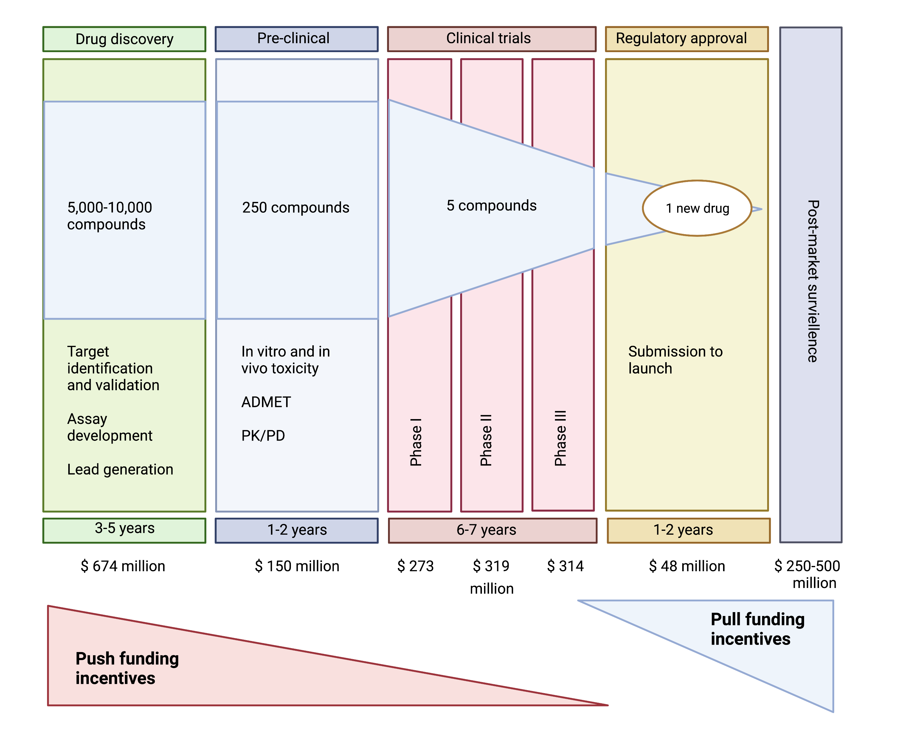
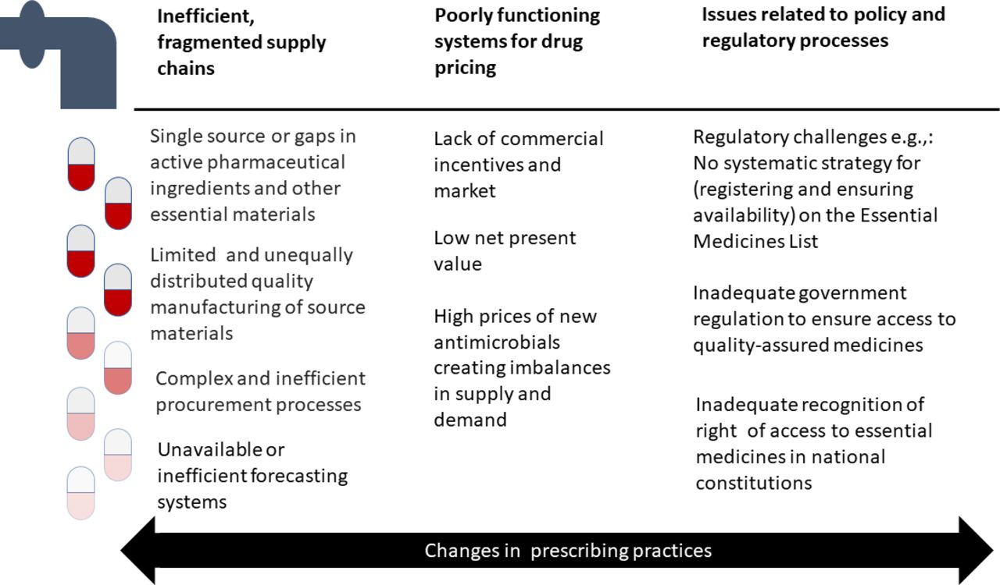

What are the current strategies to incentive antibiotic development?
Incentives for antibiotics are categorized as either ‘push’ or ‘pull’. Push incentives occur before regulatory approval by the FDA or EMA, and the funding supports many projects, including the many that fail before approval. Pull incentives are paid only after regulatory approval and hence only successful products are supported. Both push and pull incentives are required to address the lack of antibiotic development.
Many successful initiatives to establish push funding for antibiotics have been developed over the last decade. At present, major AMR development initiatives include:
US Biomedical Advanced Research and Development Authority, BARDA (1.2 billion dollars to support Phase 2/3 antibiotic development against 21st century threats including drug-resistant bacteria, supports CARB-X)
CARB-X (550 million, Hits to lead Phase 1 product development of therapeutics, diagnostics and preventatives against WHO and CDC priority drug-resistant bacteria)
The Global Antibiotic Research and Development Partnership, GARDP (Produce discovery from discovery to delivery including novel therapeutics, optimizing antibiotics, developing combinations. Focused on WHO priority list).
Novo Holdings REPAIR Impact Fund (165 million investment in lead optimization to Phase I development of therapeutics and diagnostics against WHO priority drug-resistant bacteria.)
Joint Programming Initiative on Antimicrobial Resistance, JPIAMR (novel therapeutics, diagnostics, surveillance, prevention, stewardship, WHO priority pathogens
Wellcome Trust (175 million drug-resistant infections focused on policy, strengthening evidence for action, clinical trial capabilities and innovative product development including CARB-X
AMR Action Fund Joint program through WHO, European Investment Bank, and Wellcome Trust
UK AID (315 million pounds funded through the Global AMR innovation fund and the Fleming Fund to help LMICs tackle AMR).
The German Federal Ministry of Education and Research support of national research programs as well as contributions to international initiatives like CARB-X, GARDP, and JPIAMR.
Bill & Melinda Gates Foundation (124 million targeting drug-resistant infections in low-middle income countries (LMICs), disease surveillance, vaccine development, economic modeling, and CARB-X
U.S. National Institutes of Health (1.4 billion dollars funding basic research, academic industry startup partnerships, and other research and development against bacterial threats, for vaccines, therapeutics and diagnostics
The arrival of these push incentives for antibiotics are creating some progress. The preclinical pipeline is shifting to higher quality products targeting the most urgent clinical needs, reducing the economic risk for antibiotic discovery. Without these programmes, the fragile pipeline would have likely become entirely moribund. Yet the bankruptcy of Achaogen in April 2019 and subsequent other companies working in the antibiotic sector provided a wake-up call for the antibiotics industry: the finish line is not FDA or EMA approval, but break-even profitability. For Achaogen, scientific and regulatory achievement ended in economic disaster. A similar fate awaits other antibiotic companies unless governments enact meaningful pull incentives in the next year.

Figure 5. Push versus pull incentives for antibiotic development.
Pull incentives are increasing the focus of of new initiatives to develop antibiotics in the United States and Europe, building on the release of the DRIVE-AB final report in 2018. Clearly, effective pull funding will require substantial public investment that may not be politically popular if viewed as a large cash “handout” to pharmaceutical companies. Some novel reimbursement schemes with pull incentives for antibiotic development are starting (recently reviewed by Gotham et al[11). One of the most frequently discussed pull incentives is the “Netflix reimbursement model” that is currently being implemented pilot projects in the UK and Sweden. This payment mechanism is based on a ‘de-linkage’ reimbursement approach because it seperates the payments to innovators/ manufacturers from the number of antibiotic units sold.
Figure 6. Financial Times Video Examining the “Netflix Model” of Pull Incentives for Antibiotic Reimbursement.
How can the true value of antibiotics be better communicated to the public? Two leading experts in the economics of antibiotic resistance (Drs. John Rex and Ken Outterson) have suggested that antibiotics should be thought of more like the “fire-extinguishers” of medicine.
“No one wakes up hoping they get to use a fire extinguisher that day. Not even the fire department. Fire fighters go to work every day and hope they don’t get any calls. They perform regular maintenance on all their gear and stay at the station 24/7 just as a precaution. We pay them to be available and prepared so they can come to our rescue when we need them. If we didn’t pay for the fire department for years and then a fire broke out in the middle of your town, can you imagine the damage? People would die unnecessarily, the medical system would be overwhelmed, and the fire could spread beyond the borders of the town. The fire might rage through the whole county, then the region, and then your entire country. It might even spread through the entire world, just like COVID-19.
A fire fighter uses a hose to subdue flames engulfing a home while a physician uses antibiotics to stop an infection in your body. We need to be prepared for fires – the flame kind and the medical kind. As a society, we are prepared for the flame kind. But the medical? We aren’t even close.
Without antibiotics, all of modern medicine will change worldwide. Diseases we think of only being in the history books could become a part of every day life again. Minor surgery could become life threatening. An infected cut on your hand could be the end. Childbirth will easily endanger the lives of mothers and newborns. Cancer treatments will be nearly impossible. Antibiotics are vitally important to all of humanity”.
-John Rex, M.D., AMR Solutions

For more information on how AMR risks can be responsibly and effectively communicated to the public, see this excellent video prepared by the Wellcome Trust: [Drug-resistant infections: the power of language (https://www.youtube.com/watch?v=wTgRpOIxNG0&t=6s)ùù){.uri}
For further study: Tetraphase pharmaceuticals is a small company with a innovative and unique chemistry platform for developing novel tetracycline analogues that have activity against several organisms on the WHO Priority Pathogens List. Their lead compound, eravacycline, was appoved by the FDA for the treatment of complicated intraabdominal infections in 2018. Like many of its peers, merely securing approval was only the first hurdle. What has happened since to everacycline and Tetraphase pharmaceuticals? How could a different reimbursement scheme changed outcomes?
Antibiotic supply chain problems
Although much of the focus on antibiotic availability is focused on new drugs for AMR, another worrying phenomenon is the increasing shortages of older generics, mostly injectable antibacterials, such as piperacillin-tazobactam or benzylpenicillin. Drug shortages are another factor that can contribute to AMR, as drugs ideally reserved for critically-ill patients or MDR infections may need to be susbstituted when supply problems for first-line antibiotic arise.12 The fierce price competition combined with stringent production requirements for parenteral antibacterials has led to a significant reduction of suppliers, in particular of active pharmaceutical ingredients, and to highly optimized and thus more vulnerable supply chains. Increasingly prevalent shortages of even older antibiotics is now recognized as a major public health threat and requires additional specific action.

Figure 7 The reasons for antimicrobial shortages across the development, distribution and use pathway.